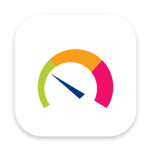

Your PRTG.
Right in the menu bar.
PRTGBar is a free, open-source macOS app for PRTG Network Monitor. Problems first, sorted by project, and notifications only when something really breaks.
Built for the people on call
Everything you check in PRTG ten times a day, one click away.
Problems first
Down, warning and unusual sensors at the top, grouped by project and device, in the five PRTG colours.
Every project at hand
One click to every device and sensor, with its last value, a 24 h history strip and uptime.
Calm notifications
Waits for a second check, groups per device, mutes flapping sensors and tells you when things are fine again.
Acknowledge and pause
Straight from the menu or a notification. A read-only API key is enough if you only want to watch.
A gauge in your menu bar
Monochrome while all is well. The needle and one segment turn orange or red when something needs you.
Native and private
Built with SwiftUI and AppKit. Your API key stays in the macOS Keychain and only talks to your PRTG server.
Get started in a minute
macOS 14 or later, Apple silicon and Intel.
Install with Homebrew
One command, no dependencies.
brew install konradmichalik/tap/prtgbarConnect your PRTG
Open Settings from the menu (⌘,) and enter your server and an API key. Create the key in PRTG under Setup › My Account › API Keys: Read to watch, Read/Write to acknowledge and pause.
You are done
PRTGBar polls right away. Click the gauge in the menu bar to see what needs your attention.
Update to the latest version
brew update && brew upgrade prtgbarDownload the DMG
Pick the build for your Mac from the latest release:
Latest releaseaarch64for Apple silicon,x86_64for Intel.Install and allow it to run
Drag PRTGBar to Applications. The app is not notarized yet, so macOS blocks it on first launch. This allows it:
xattr -dr com.apple.quarantine /Applications/PRTGBar.appConnect your PRTG
Open Settings from the menu (⌘,) and enter your server and an API key. Create the key in PRTG under Setup › My Account › API Keys: Read to watch, Read/Write to acknowledge and pause.
You are done
PRTGBar polls right away. Click the gauge in the menu bar to see what needs your attention.